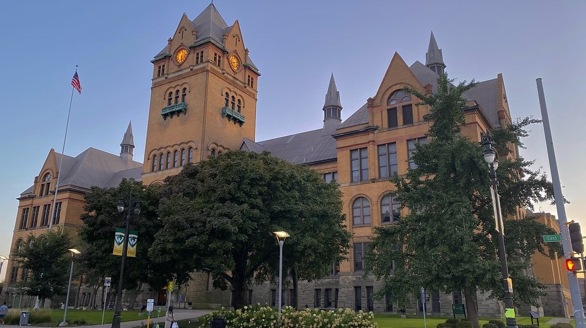
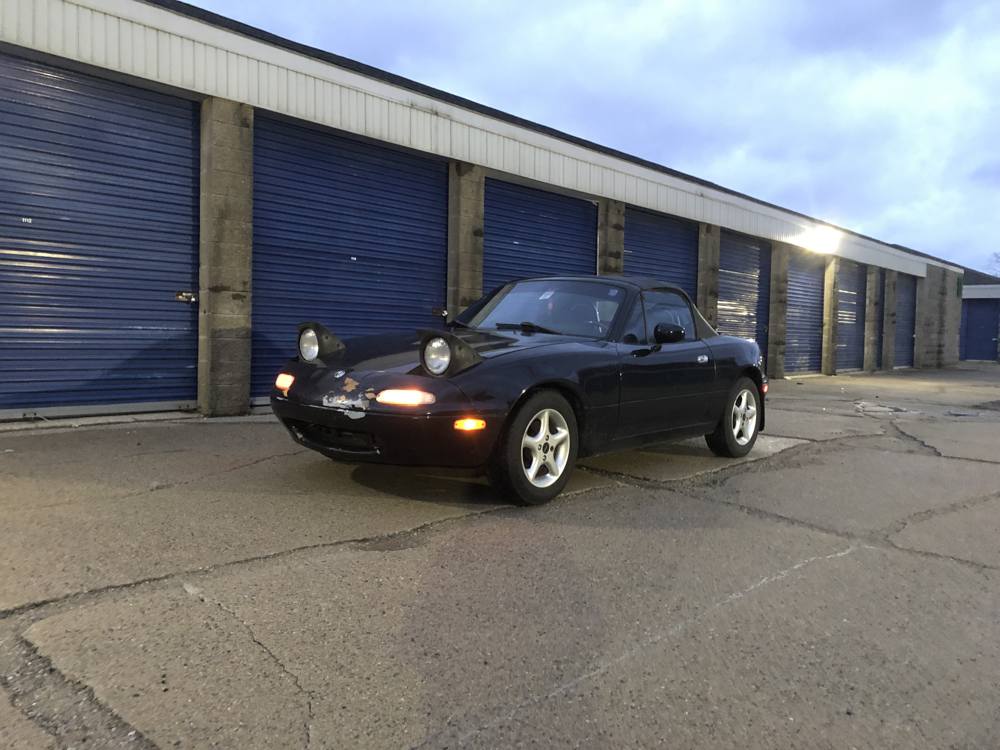

About Me
I'm a full-time Chemical Lab Technician with two years of experience managing projects and computer science student with four years of programming experience at Wayne State University. I am looking to apply my work experience and programming skills in an engaging internship!

Education
Wayne State University | Aug 2020 - Present
- Expected graduation: May 2026
- GPA: 3.50
- Credits completed: 91 out of 120
- Used Java, C++, and Python to complete coursework:
- Implemented various sorting and searching algorithms
- Utilized data structures such as trees and linked lists
- Demonstrated knowledge of object-oriented programming
- Used HTML and CSS in website design
- Utilized Swift and Java to develop IOS and Android applications
- Used Microsoft Active Directory to configure user accounts and permissions
- Conducted network vulnerability tests using Wireshark and Nessus software

Work Experience
Axalta Coating Systems | Jun 2022 - Present
- Managed projects from start to finish by planning testing timelines, communicating with outside labs, and adhering to testing requirements to meet customer needs.
- Frequently communicated with my team to coordinate project timing, verify project requirements, and determine the proper path forward to resolve issues with testing.
- Performed weathering, chemical, impact, and adhesion resistance tests to evaluate coating film quality.
- Recorded appearance, hardness, color, and gloss data to determine effects on coatings over plastic and metal substrates.
- Performed daily lab inspections to maintain safe lab conditions and ensure that equipment is functional and calibrated.
- Safely handled and disposed of hazardous chemicals in compliance with safety and environmental regulations.

Hobbies
- Working on my car:
- Routine Maintenance: Oil changes, pad and rotor changes, accessory belt replacements, etc.
- Big Jobs: Replaced all components of AC system, replaced EGR tube, installed speakers
- Learning Russian:
- Self-studying books, movies, music, etc.